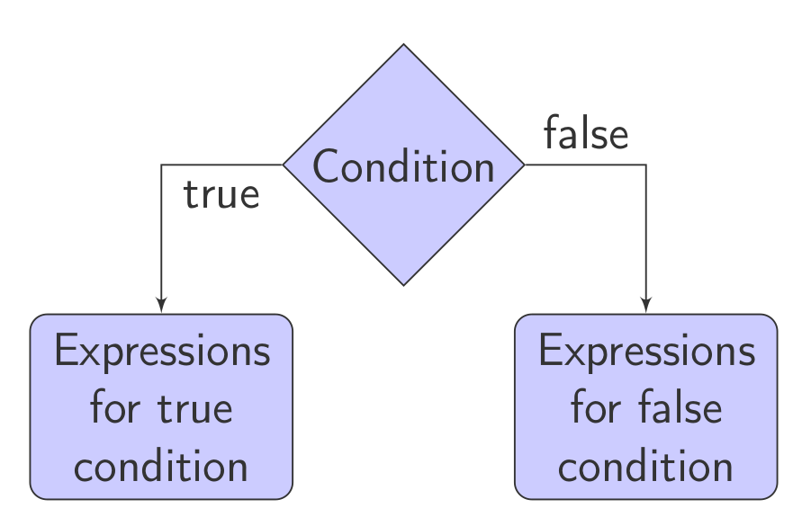
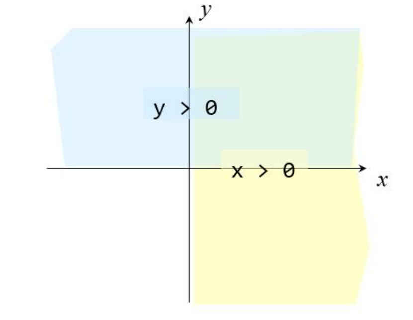
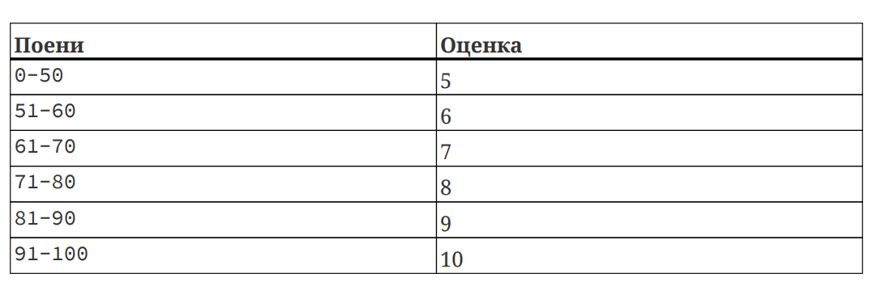
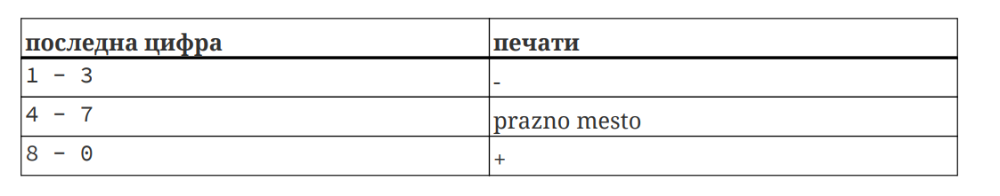

They can be applied to any comparable data types, and the result is an integer: 0 (false) or 1 (true).
| Operator | Meaning |
|---|---|
| < | Less than |
| <= | Less than or equal to |
| > | Greater than |
| >= | Greater than or equal to |
| == | Equality |
| != | Inequality (difference) |
They are most commonly used in combination with relational operators to form complex logical expressions, which again return a result of 0 or 1.
| Operator | Meaning |
|---|---|
| && | Logical AND |
| || | Logical OR |
| ! | Negation (NOT) |
Example:
int a = 5 && 0; // a = 0;
a = 2 && 5; // a = 1;
a = 0 || 5; // a = 1;
a = !0; // a = 1;
a = !5; // a = 0;=.x = (y = 10) * (z = 5);
x = y = z = 20;The value of the variable is increased before the expression in which it participates is calculated.
a = ++b;The value of the variable is increased after the expression is calculated.
a = b++;+= operatora += 5; // a = a + 5;
a += b * c; // a = a + b * c;-= operatora -= 3; // a = a - 3;*= operatora *= 3; // a = a * 3;/= operatora /= 3; // a = a / 3;%= operatora %= 3; // a = a % 3;
if (condition) {
statements_if_true;
}
else {
statements_if_false;
}Example: What will it print?
#include <iostream>
using namespace std;
int main() {
int m = 5, n = 10;
if (m > n)
++m;
++n;
cout << "m = " << m << ", n = " << n;
return 0;
}Solution: m = 5, n = 11
Write a program that reads a character from the keyboard and prints 1 if it is a lowercase letter or 0 if it is an uppercase letter.
Solution:
#include <iostream>
using namespace std;
int main()
{
char ch;
int result;
cout << "Enter a character: ";
cin >> ch;
result = (ch >= 'a' && ch <= 'z');
cout << result;
return 0;
}Bonus solution:
result = (ch >= '0' && ch <= '9');The coordinates of a point on a plane are entered from the keyboard. Write a program that will print to which quadrant the entered point belongs.

Solution 1
#include <iostream>
using namespace std;
int main () {
float x, y;
cout<<"Enter coordinates:"<<endl;
cin>>x>>y;
if (x > 0 && y > 0)
cout<<"I quadrant."<<endl;
if (x > 0 && y < 0)
cout<<"IV quadrant."<<endl;
if (x < 0 && y > 0)
cout<<"II quadrant."<<endl;
if (x < 0 && y < 0)
cout<<"III quadrant."<<endl;
return 0;
}Solution 2
#include <iostream>
using namespace std;
int main () {
float x, y;
cout<<"Enter coordinates:"<<endl;
cin>>x>>y;
if (x > 0)
if (y > 0)
cout<<"I quadrant."<<endl;
else
cout<<"IV quadrant."<<endl;
else if (y > 0)
cout<<"II quadrant."<<endl;
else
cout<<"III quadrant."<<endl;
return 0;
}Does this program cover all cases?
Will it print something for any entered point?
Solution v3
#include <iostream>
using namsepace std;
int main () {
float x, y;
cout<<"Enter coordinates:"<<endl;
cin>>x>>y;
if (x > 0)
if (y > 0)
cout<<"I quadrant."<<endl;
else if (y < 0)
cout<<"IV quadrant."<endl;
else
cout<<"Positive X."<endl;
else if (x < 0)
if (y > 0)
cout<<"II quadrant."<endl;
else if (y < 0)
cout<<"III quadrant."<endl;
else
cout<<"Negative X."<endl;
else
if (y > 0)
cout<<"Positive Y."<endl;
else if (y < 0)
cout<<"Negative Y."<endl;
else
cout<<"Coordinate start");
return 0;
}Write a program that will generate an appropriate grade for an entered number of points from an exam according to the following table:

Решение
#include <iostream>
using namespace std;
int main () {
int points, grade = 0;
cout<<"Vnesi points: "<<endl;
cin>>points;
if (points >= 0 && points <= 50) grade = 5;
else if (points > 50 && points <= 60) grade = 6;
else if (points > 60 && points <= 70) grade = 7;
else if (points > 70 && points <= 80) grade = 8;
else if (points > 80 && points <= 90) grade = 9;
else if (points > 90 && points <= 100) grade = 10;
else cout<<"Nevalidna vrednost na points!"<<endl;
cout<<"grade: "<<grade<<endl;
return 0;
}Решение в2
#include <iostream>
using namespace std;
int main () {
int points, grade = 0;
cout<<"Vnesi points: "<<endl;
cin>>points;
if (points < 0 || points > 100)
cout<<"Nevalidna vrednost za points!"<<endl;
else {
if (points > 90) grade = 10;
else if (points > 80) grade = 9;
else if (points > 70) grade = 8;
else if (points > 60) grade = 7;
else if (points > 50) grade = 6;
else grade = 5;
cout<<"Grade: "<<grade<<endl;
}
return 0;
}Modify the previous program so that in addition to the grades, it will also print the signs + and - depending on the value of the last digit of the points:

Example:
81 = 9- 94 = 10 68 = 7+
The + or - sign should not be added for the grade 5, and the + sign should not be added for the grade 10.
Solution
#include <iostream>
using namespace std;
int main () {
int points, grade = 0;
cout<<"Enter points: "<<endl;
cin>>points;
if (points < 0 || points > 100)
cout<<"Invalid points!"<<endl;
else {
if (points > 90) grade = 10;
else if (points > 80) grade = 9;
else if (points > 70) grade = 8;
else if (points > 60) grade = 7;
else if (points > 50) grade = 6;
else grade = 5;
char znak = ' ';
int pc = points % 10;
if (grade != 5) {
if (pc >= 1 && pc <= 3) znak = '-';
else if (grade != 10 && (pc >= 8 || pc == 0))
znak = '+';
}
cout<<"Grade: "<<grade<<znak<<endl;
}
return 0;
}The lengths of three line segments are entered from the keyboard in random order. Write a program that will check whether a triangle can be constructed from the line segments, and if it can, whether it is a right triangle and calculate its area. Otherwise, appropriate messages should be printed.
Solution
#include <iostream>
using namespace std;
int main() {
float a, b, c;
cout<<"Vnesi dolzini na strani: "<<endl;
cin>>a>>b>>c;
if ((a + b <= c) || (a + c <= b) || (b + c <= a))
cout<<"Ne moze da se konstruira triagolnik."<<endl;
else {
if (a >= b) {
float tmp = a;
a = b;
b = tmp;
}
if (a >= c) {
float tmp = a;
a = c;
c = tmp;
}
if (b >= c) {
float tmp = b;
b = c;
c = tmp;
} // po ova najdolgata strana kje bide vo c
if (c * c == a * a + b * b) {
cout<<"Tragolnikot e pravoagolen."<<endl;
cout<<"Ploshtinata mu e: "<<a * b / 2;
} else {
cout<<"Tragolnikot NE e pravoagolen."<<endl;
}
}
return 0;
}The lengths of three line segments are entered from the keyboard in random order. Check whether a triangle can be constructed from the given line segments. If it can, print whether the triangle is scalene, equilateral, or isosceles, and calculate its area.
Решение
#include <iostream>
#include <cmath>
using namespace std;
int main() {
float a, b, c;
cout<<"Vnesi dolzini na strani: "<<endl;
cin>>a>>b>>c;
if ((a + b <= c) || (a + c <= b) || (b + c <= a))
cout<<"A triangle cannot be constructed."<<endl;
else {
if (a == b && b == c)
cout<<"The triangle is equilateral."<<endl; // equilateral
else if (a == b || b == c || a == c)
cout<<"The triangle is isosceles."<<endl; // isosceles
else
cout<<"The triangle is scalene."<<endl; // scalene
float p, s = (a + b + c) / 2;
p = sqrt(s * (s - a) * (s - b) * (s - c));
cout<<"Area :"<<p;
}
return 0;
}Write a program to calculate the age of a dog in human years. The dog’s age is read from standard input.
If a negative number is entered for the age, print the following message: “Age must be a positive number”.
Note: For the first two years, one dog year is equal to 10.5 human years. After that, each dog year is equal to 4 human years.
#include <iostream>
using namespace std;
int main() {
int dogAge, humanAge;
cout << "Enter dog age: ";
cin >> dogAge;
if (dogAge < 0) {
cout << "Age must be a positive number" << endl;
} else {
if (dogAge <= 2) {
humanAge = dogAge * 10.5;
} else {
humanAge = 2 * 10.5 + (dogAge - 2) * 4;
}
cout << "Human age of the dog is: " << humanAge << endl;
}
return 0;
}Write a program that will print the maximum of two numbers whose values are read from the keyboard.
Solution:
#include <iostream>
using namespace std;
int main() {
int a, b;
cout << "Enter 2 numbers: " << endl;
cin >> a >> b;
if (a > b)
cout << "Maximum: " << a;
else
cout << "Maximum: " << b;
return 0;
}Solution 2 (without if-else):
#include <iostream>
using namespace std;
int main() {
int a, b, max;
cout << "Enter 2 numbers: " << endl;
cin >> a >> b;
max = (a > b) ? a : b;
cout << "Maximum: " << max;
return 0;
}Write a program that checks if a given year, read from the keyboard, is a leap year or not and prints an appropriate message.
Examples of leap years: 1976, 2000, 2004, 2008, 2012…
Hint: A year is a leap year if it is divisible by 4 but not divisible by 100, or if it is divisible by 400.
Solution:
#include <iostream>
using namespace std;
int main() {
int year;
cout << "Enter a year: " << endl;
cin >> year;
if ((year % 4 == 0 && year % 100 != 0) || year % 400 == 0)
cout << year << " is a leap year." << endl;
else
cout << year << " is not a leap year." << endl;
return 0;
}